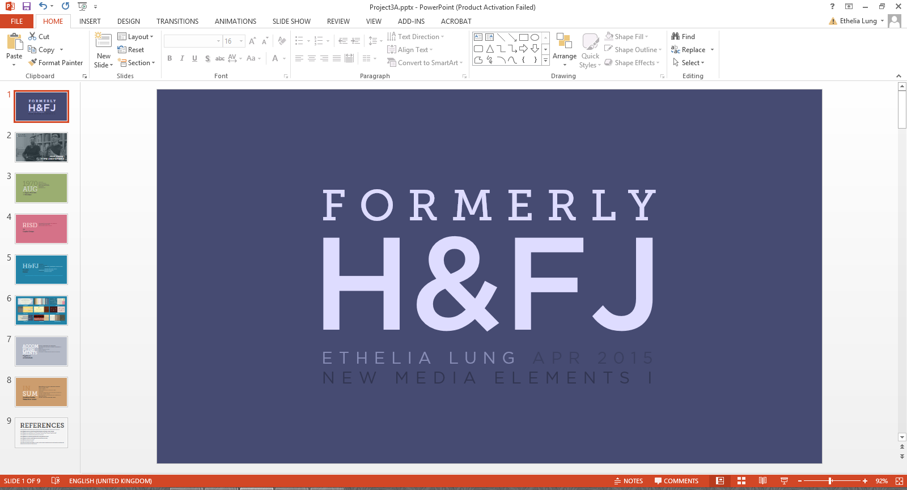
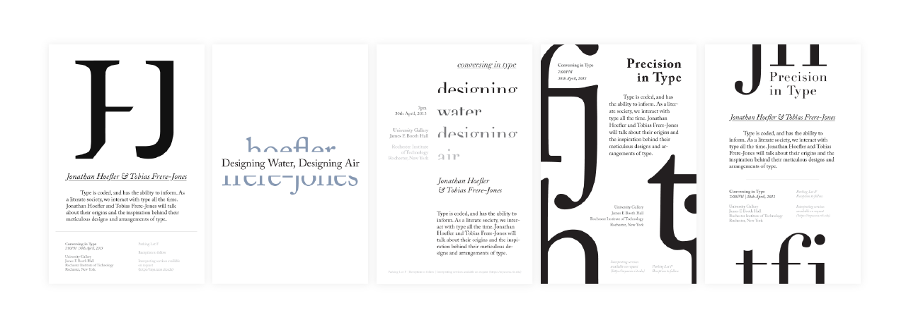
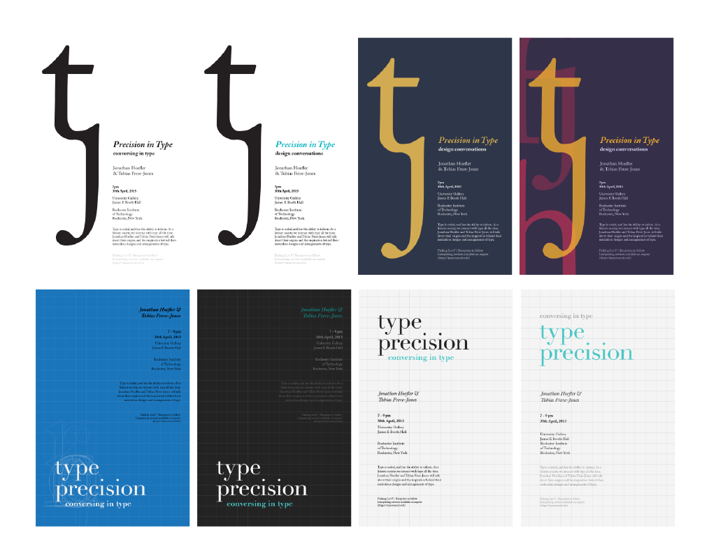
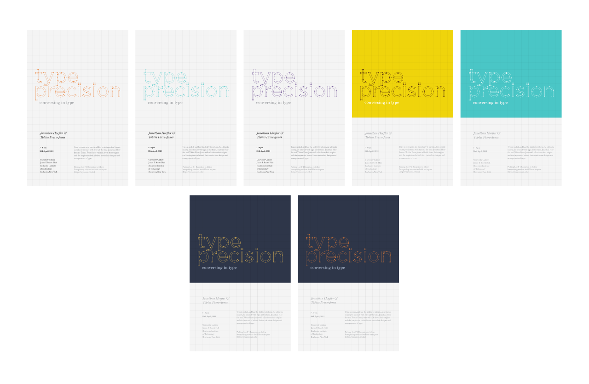

Type Precision
Client
School ProjectRole
Poster & Graphic DesignBrief
How do you design an effective event poster?
This project was designed for my New Media Design Elements I course, with the goal being to use visual hierarchy to design an effective poster. The information was based upon a prior typographer research and presentation project.
{kind=link}
Presentation
The prompt was to present on a graphic designer or typographer of choice. I chose to present on Jonathan Hoefler and Tobias Frere-Jones, both of whom are very recognised figures in the realm of typography. The presentation, which discussed their influence, lent itself to the poster design.
{kind=link}
Process
The design went through many stages. Because I had two designers who (once) worked in conjunction with one another, I had initially hoped to combine the letters of their names in order to create a nice graphic to pair with the poster copy.
{kind=link}
Eventually, however, I decided that the direction I was going in wasn't exciting or attention-catching. I thought about typography and the process of creating a typeface - the idea of conforming to a grid, and the act of adjusting an expanded typeface in Illustrator.
{kind=link}
After a lot of tinkering, I found a visual style that I liked - grids, but played down, and important areas highlighted using colour blocking. Details such as the nodes and handles of the header type give the design personality and a unique quality.
{kind=link}
Fin
When it comes to events and event posters, our attention must be captured right away. This is possible with the right balance of visuals and body copy.